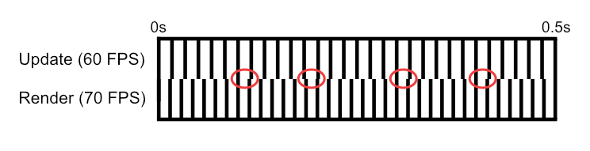

Game Loop in Java
Our game loop mainly has two tasks: updating the game (e.g. changing position, health, ...) and then rendering those changes over and over again. To achieve this there are different solutions with varying advantages and disadvantages:
Game Loop with fixed update and render
The variable deltaTime defines the time between the previous and the current frame. In this example deltaTime is a fixed value.
This has the advantage that we don't have to worry about very extreme deltaTime values like 2.0s or 0.00001s that would break our physics simulation.
When the frame rate drops, the loop will try to call the update() method multiple times before another render() call to keep the game from slowing down. This means that
even though our game may not be rendering at 60 fps, the update() method will still be called 60 times a second. This, however, also has its limitations. For example, when the update()
method should be executed 60 times per second, but every call takes longer than 1/60th of a second, our second while loop will simply go on forever. To prevent this we need the maxCatchUpTime variable which indirectly defines the maximum amount of update()
calls before the game will eventually begin to slow down because the update method cannot be called often enough per second.
For measuring the elapsed time between the frames (passedTime), the call System.nanoTime() is used to get maximum precision.
boolean render = false;
double deltaTime = 1.0 / 60.0; // = 60fps
double maxCatchUpTime = 0.15;
double firstTime = 0;
double lastTime = System.nanoTime() / 1000000000.0;
double passedTime = 0;
double unprocessedTime = 0;
while(run) {
render = false;
firstTime = System.nanoTime() / 1000000000.0;
passedTime = firstTime - lastTime;
lastTime = firstTime;
if(unprocessedTime < maxCatchUpTime) {
unprocessedTime += passedTime;
}
while(unprocessedTime >= deltaTime) {
unprocessedTime -= deltaTime;
render = true;
update();
}
if(render) {
render();
} else {
Thread.sleep(1);
}
}
If we want to be able to change our frame rate, we have to make our physics simulation depend on it because otherwise our game would run twice as fast at 60fps as at 30fps.
To achieve this, whe have to use our deltaTime value in our physics calculations.
To simulate movement (where the velocity changes) the Verlet Integration can be used:
position.x = position.x + (0.5 * (newVelocityX + velocityX) * deltaTime);
position.y = position.y + (0.5 * (newVelocityY + velocityY) * deltaTime);
Another solution would be to keep our update() method at a fixed rate and only change the rate of the render() calls.
Game Loop with fixed update and rendering as fast as possible
Here the update() method is called at a fixed rate per second like in our first solution, but the render() method is called as often as possible.
This can result in a slight stuttering of the movement because the amount of update() calls in between two frames can vary. This happens for example when the update() method is called 60 times per second and
the rendering happens 70 times per second.

To solve this we can perfrom an interpolation between two physics steps when rendering. To do this we can use the alpha value
which shows us how far we have progressed between two physics updates.
double deltaTime = 1.0 / 60.0; // = 60fps
double maxCatchUpTime = 0.2;
double firstTime = 0;
double lastTime = System.nanoTime() / 1000000000.0;
double passedTime = 0;
double unprocessedTime = 0;
while(run) {
firstTime = System.nanoTime() / 1000000000.0;
passedTime = firstTime - lastTime;
lastTime = firstTime;
if(unprocessedTime < maxCatchUpTime) {
unprocessedTime += passedTime;
}
while(unprocessedTime >= deltaTime) {
unprocessedTime -= deltaTime;
update();
}
double alpha = unprocessedTime / deltaTime;
render(alpha);
}
Measuring FPS
To measure the amount of frames in the past second, we can modify the code like so:double frameTime = 0.0;
int frames = 0;
int currentFPS = 0; //frames in the last second
while(run) {
...
frameTime += passedTime;
while(unprocessedTime >= deltaTime) {
...
//if on second has passed: update currentFPS
if(frameTime >= 1.0) {
currentFPS = frames;
frameTime = 0;
frames = 0;
}
}
if(render) {
render();
frames++;
}
}
Sources
| [1] |
Gaffer On Games - Fix Your Timestep! |